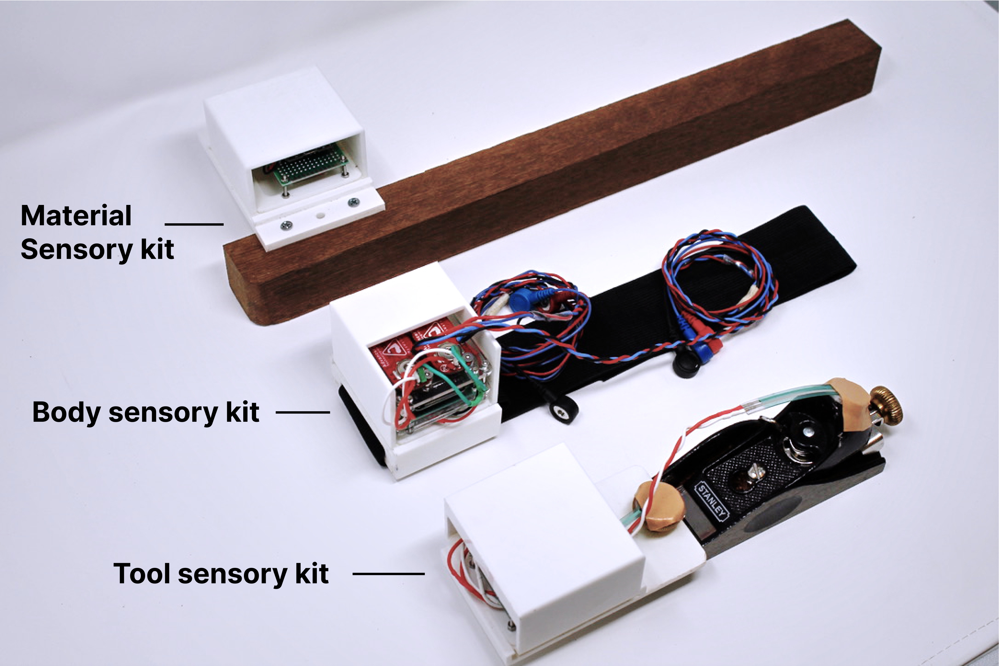
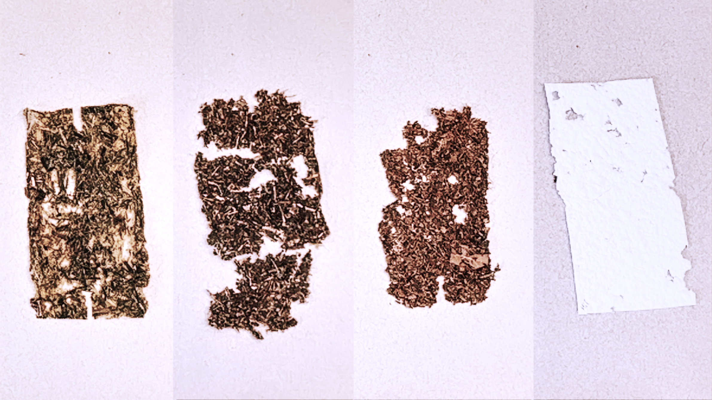
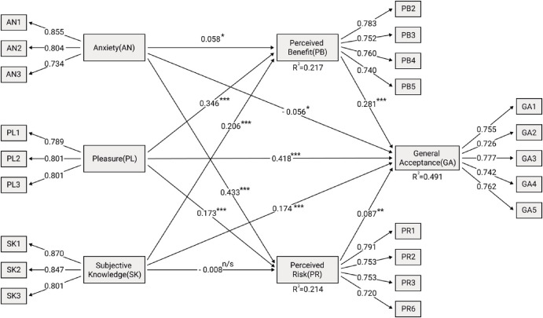
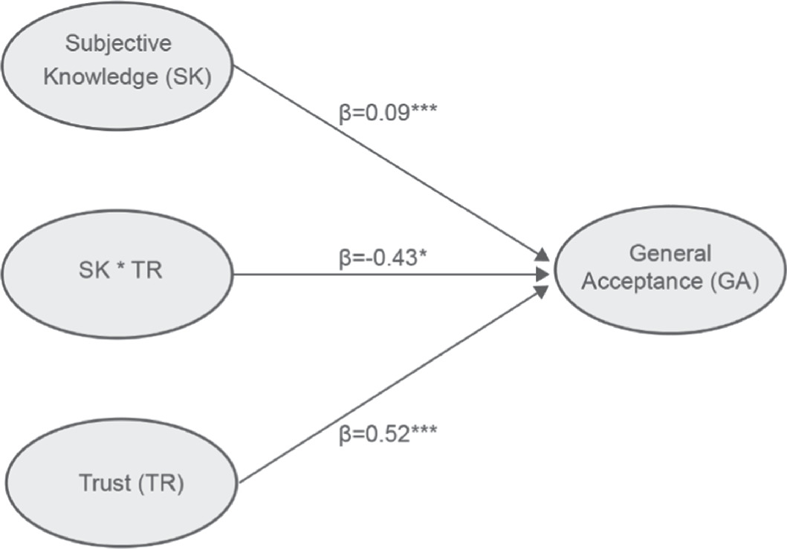

I’m a designer, technologist, and user researcher, with a focus on embodied cognition and human-computer integration. Specifically, I’m interested in how would embodied machine agency improve human’s social interaction. I usually blend physical computing and mixed methods to answer my interested questions.

Research

Chasing Tacit Knowledge: Multi-layered Sensing in Woodworking(Submitted)
We discuss existent approaches to trace tacit knowledge in craft practices through a turn to more-than-human centered design. This leads to a call for a multi-layered sensing system that covers not only the human body but also the tools and materials involved.Furthermore, it stresses the necessity of relational data collection and analysis. We present the design and implementation of this concept for a traditional woodworking practice……

Triangulate ‘Listening’ to Materials
To listen to materials is an often-repeated claim in design, yet methodologies on how to perform such a task are less clear. This paper will review forms of material encounters by leaning on more-than-human design and hybrid craft. It asks how the concept of "listening" changed with the emergence ……

Exploring the influence of anxiety, pleasure and subjective……
Although Fully Autonomous Vehicles (FAVs) will bring huge benefits to society, it seems that public acceptance tends to be mixed. This study, based on affective reactions and knowledge, develops a research framework to explain the general acceptance. The model also examines the mediating effects of perceived benefit/risk on the relationships between explanatory ……

The effects of subjective knowledge on the acceptance of ……
The rapid development of autonomous driving technology has attracted great attention from society nowadays. However, the lack of consumer acceptance might be a prominent barrier to the large-scale adoption of fully autonomous vehicles (FAVs). This study argues that it is critical to predicting FAV acceptance before it is fully popularised. To investigate the relationship between the public FAV subjective knowledge and general acceptance, we conducted an online questionnaire. The results showed that ……
Design